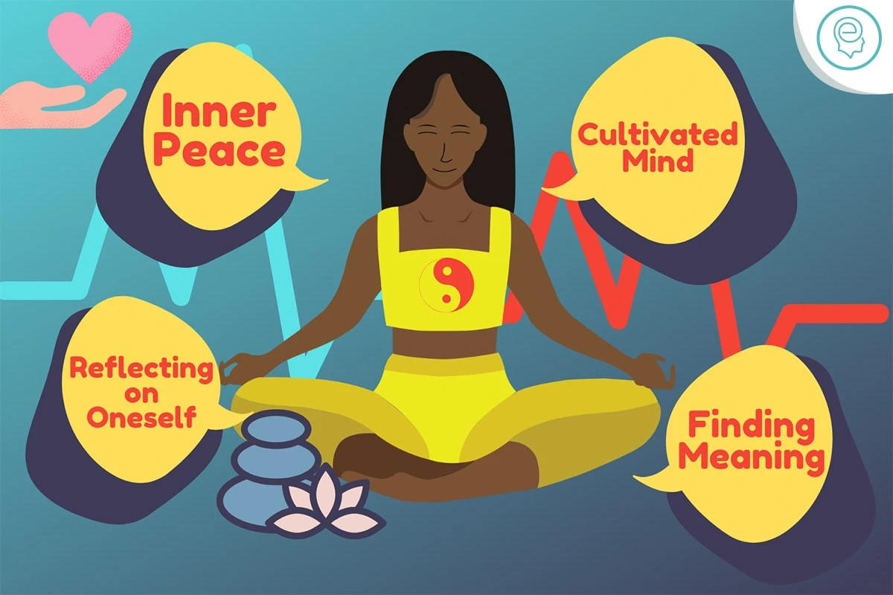

Reason 1: Help from friends and family is not always enough
Friends and family can be great ways of support. They often play a big role in helping one recover from a mental health issue. Often, the support to treat a mental health condition exceeds the capacity of friends and family alone. See a psychologist and instead, get help with professional intervention.
Friends and family can be quick to give advice and enter into ‘fix-it mode’. This may or may not help one’s needs. People close to us can often lack objectivity, knowledge, and understanding, which can lead to void responses and biased views. In other cases, the problem for which you need help may involve a friend or family member. This makes their presence an issue.
If you see a Psychologist, they are objective, do not judge and are trained in mental health. This allows them to overcome the above downfalls whilst working with the person to address their issues.
Reason 2: Improving your mental health is worth the investment
Just as we need to take care of our body it’s equally important to take care of our mental health. Putting mental health first is part of self-care and should be on everyone’s ‘to-do list’. Also, mental health affects all aspects of joy. This includes one’s physical health, risk of illness and disease, ability to cope with stress and ability to participate and function well in life.
Just as a toothache might lead you to visit a dentist, mental and emotional distress and/or problems in relationships, at work, or at school should prompt you to consider seeking help from a psychologist. Making your mental health a priority is likely to enhance your overall health and ability to live a rich and meaningful life.
Reason 3: Exposure to other viewes by seeing a psychologist is empowering
When difficult situations, emotions or problems arise in life, it can be hard to have a balanced outlook and think of another way. However, working with and seeing a psychologist can help to widen your perspective. It helps increase what you know, what you understand and make space between you and your problem. In turn, you will be better able to take on and get over the source of your issues.
Exposure to other views allow people to reflect on their own selves. Also, if they are helpful or harmful. Discussing your problems by seeing a psychologist will likely give you access to new information. Thus, greater choice in terms of how you understand and relate to yourself and your life. With greater choice, a sense of mandate often follows.
Reason 4: Reflect and find meaning for inner peace
We all need a safe place where we can reflect on our lives. That is without reproval, acuity or concerns about our privacy. However, life today does not always give us this chance. Also, it can be hard to find time to think amidst the tasks of our day-to-day. Also, not all people we talk to will be supportive of our experience.
Working with and seeing a psychologist lets you pay attention inwards in a safe space with the help of a caring and knowledgeable professional. Also, through the process of therapy, many people achieve a greater sense of self-awareness, greater insight into their strengths and difficulties and a sense of clarity in knowing their values and goals.
Reflecting with and receiving validation from a psychologist can help people to resolve inner conflict. This helps attribute meaning to painful life experiences and feel a sense of inner peace.
Reason 5: Learning new coping skills for growth
Working with/ seeing a psychologist can help you learn and master new coping methods to better manage current and future problems. Coping strategies are the efforts you make to solve personal and interpersonal problems. This is in an attempt to manage and minimise stress, emotional discomfort, and conflict.
Some coping ways are more effective than others, and not all are helpful or healthy. As an example, turning to food or alcohol for comfort is a form of coping. This may reduce distress in the short term, but create greater problems in the long term. Ways of coping can become habitual, which is an issue if they are negatively impacting you.
A psychologist can support you in learning and implementing new coping strategies in your life. See a psychologist and you will likely be better able to manage stress, resolve conflicts, and control difficult and impulsive behaviours that currently detract from your quality of life.